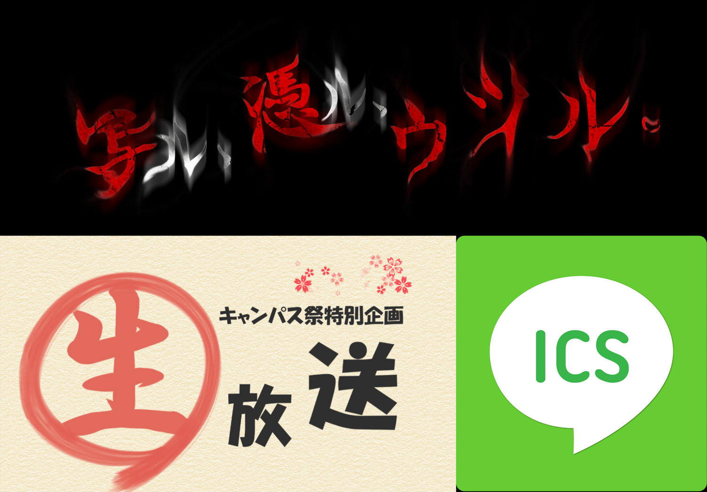
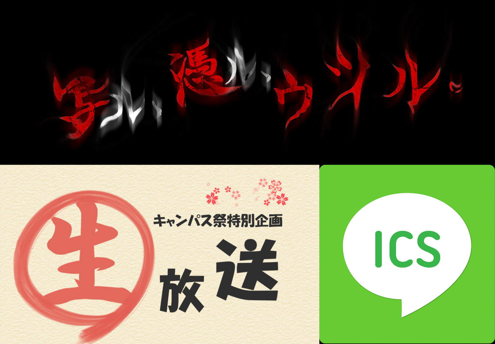

2016.5.29 高槻キャンパス祭 終了  高槻キャンパス祭が5月29日に無事終了しました。今年は昨年と同様に、スタジオ収録、生放送を行いました。そして、新たに「あなたのアイコン撮りますよ！」という企画やメッセージボードを設置しました。どのイベントも大盛況のうちに終了いたしました。ご来場いただいた皆様、生放送をご試聴いただいた皆様、企画に参加していただいた皆様、ありがとうございました。来年の高槻キャンパス祭も、皆様のお越しをお待ちしております。 BACK
2016.5.29 高槻キャンパス祭 終了  高槻キャンパス祭が5月29日に無事終了しました。今年は昨年と同様に、スタジオ収録、生放送を行いました。そして、新たに「あなたのアイコン撮りますよ！」という企画やメッセージボードを設置しました。どのイベントも大盛況のうちに終了いたしました。ご来場いただいた皆様、生放送をご試聴いただいた皆様、企画に参加していただいた皆様、ありがとうございました。来年の高槻キャンパス祭も、皆様のお越しをお待ちしております。